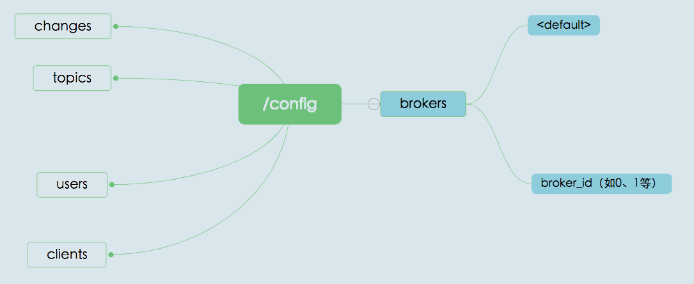
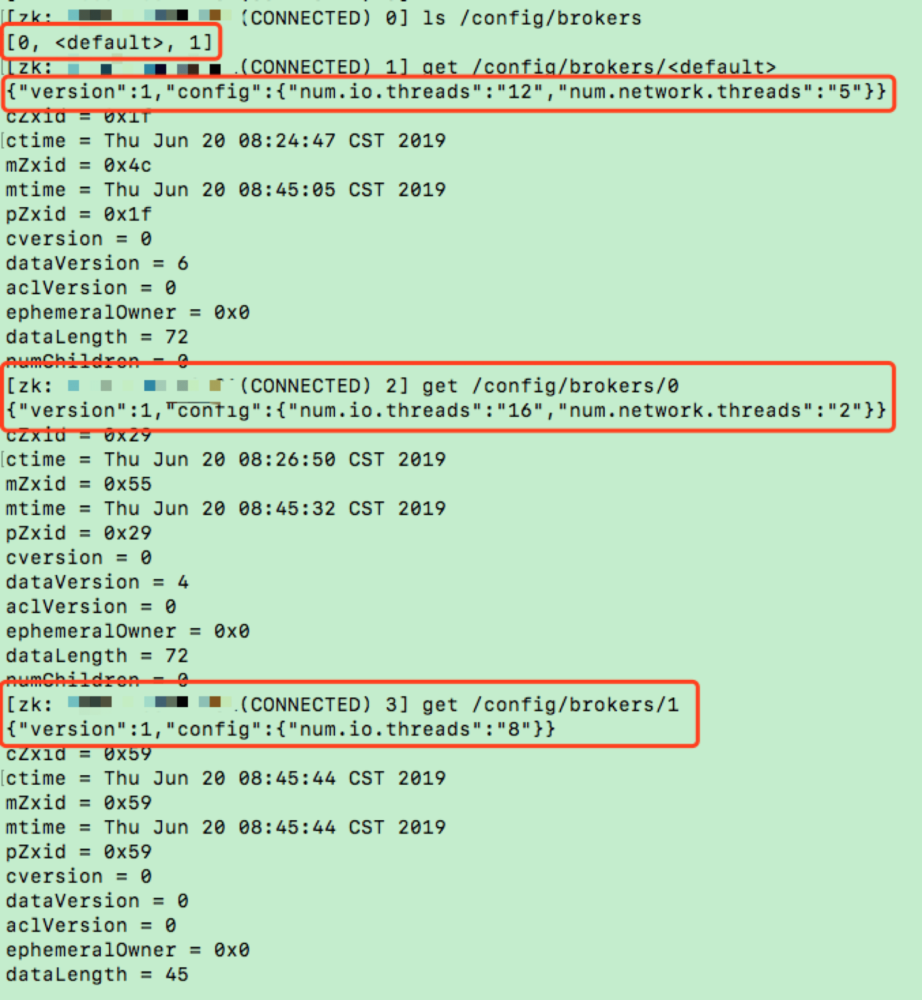
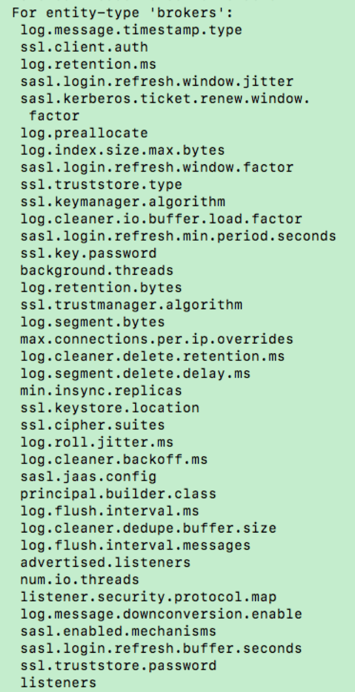
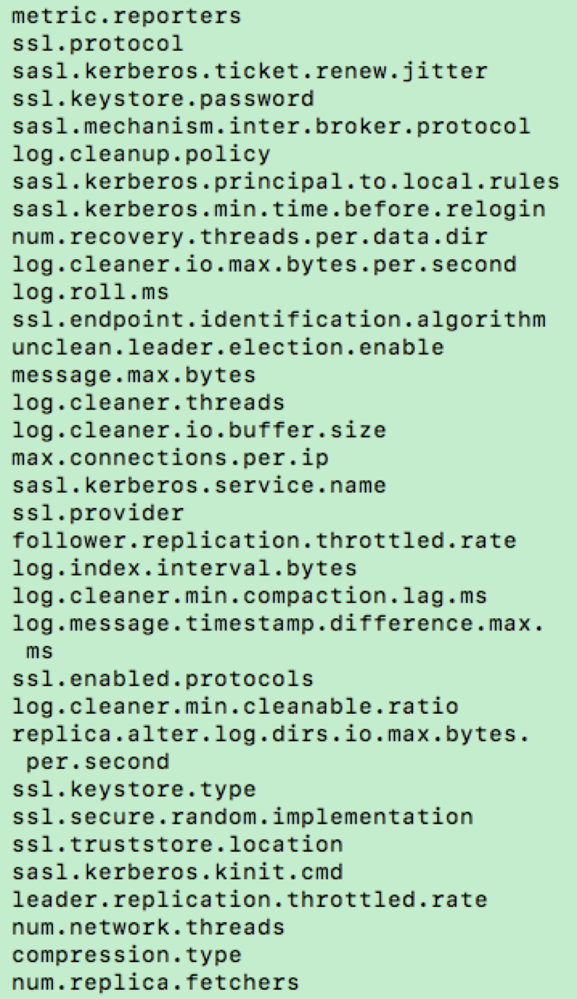
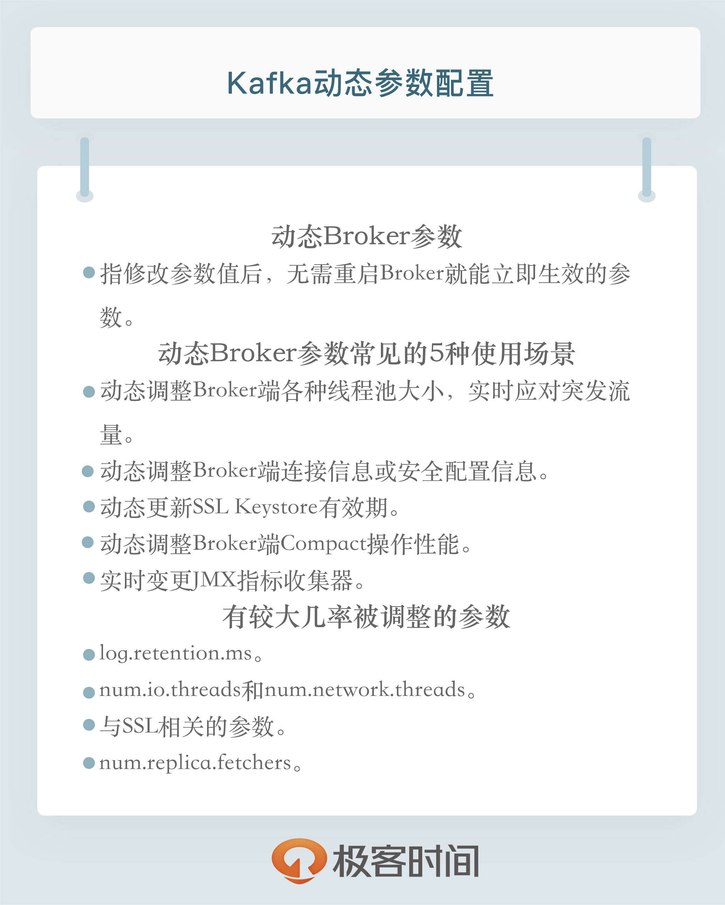

- 00 开篇词 为什么要学习Kafka？.md.html
- 01 消息引擎系统ABC.md.html
- 02 一篇文章带你快速搞定Kafka术语.md.html
- 03 Kafka只是消息引擎系统吗？.md.html
- 04 我应该选择哪种Kafka？.md.html
- 05 聊聊Kafka的版本号.md.html
- 06 Kafka线上集群部署方案怎么做？.md.html
- 07 最最最重要的集群参数配置（上）.md.html
- 08 最最最重要的集群参数配置（下）.md.html
- 09 生产者消息分区机制原理剖析.md.html
- 10 生产者压缩算法面面观.md.html
- 11 无消息丢失配置怎么实现？.md.html
- 12 客户端都有哪些不常见但是很高级的功能？.md.html
- 13 Java生产者是如何管理TCP连接的？.md.html
- 14 幂等生产者和事务生产者是一回事吗？.md.html
- 15 消费者组到底是什么？.md.html
- 16 揭开神秘的“位移主题”面纱.md.html
- 17 消费者组重平衡能避免吗？.md.html
- 18 Kafka中位移提交那些事儿.md.html
- 19 CommitFailedException异常怎么处理？.md.html
- 20 多线程开发消费者实例.md.html
- 21 Java 消费者是如何管理TCP连接的_.md.html
- 22 消费者组消费进度监控都怎么实现？.md.html
- 23 Kafka副本机制详解.md.html
- 24 请求是怎么被处理的？.md.html
- 25 消费者组重平衡全流程解析.md.html
- 26 你一定不能错过的Kafka控制器.md.html
- 27 关于高水位和Leader Epoch的讨论.md.html
- 28 主题管理知多少_.md.html
- 29 Kafka动态配置了解下？.md.html
- 30 怎么重设消费者组位移？.md.html
- 31 常见工具脚本大汇总.md.html
- 32 KafkaAdminClient：Kafka的运维利器.md.html
- 33 Kafka认证机制用哪家？.md.html
- 34 云环境下的授权该怎么做？.md.html
- 35 跨集群备份解决方案MirrorMaker.md.html
- 36 你应该怎么监控Kafka？.md.html
- 37 主流的Kafka监控框架.md.html
- 38 调优Kafka，你做到了吗？.md.html
- 39 从0搭建基于Kafka的企业级实时日志流处理平台.md.html
- 40 Kafka Streams与其他流处理平台的差异在哪里？.md.html
- 41 Kafka Streams DSL开发实例.md.html
- 42 Kafka Streams在金融领域的应用.md.html
- 加餐 搭建开发环境、阅读源码方法、经典学习资料大揭秘.md.html
- 用户故事 黄云：行百里者半九十.md.html
- 结束语 以梦为马，莫负韶华！.md.html
- 捐赠
29 Kafka动态配置了解下？
你好，我是胡夕。今天我要和你讨论的主题是：Kafka的动态Broker参数配置。
什么是动态Broker参数配置？
在开始今天的分享之前，我们先来复习一下设置Kafka参数，特别是Broker端参数的方法。
在Kafka安装目录的config路径下，有个server.properties文件。通常情况下，我们会指定这个文件的路径来启动Broker。如果要设置Broker端的任何参数，我们必须在这个文件中显式地增加一行对应的配置，之后启动Broker进程，令参数生效。我们常见的做法是，一次性设置好所有参数之后，再启动Broker。当后面需要变更任何参数时，我们必须重启Broker。但生产环境中的服务器，怎么能随意重启呢？所以，目前修改Broker端参数是非常痛苦的过程。
基于这个痛点，社区于1.1.0版本中正式引入了动态Broker参数（Dynamic Broker Configs）。所谓动态，就是指修改参数值后，无需重启Broker就能立即生效，而之前在server.properties中配置的参数则称为静态参数（Static Configs）。显然，动态调整参数值而无需重启服务，是非常实用的功能。如果你想体验动态Broker参数的话，那就赶快升级到1.1版本吧。
当然了，当前最新的2.3版本中的Broker端参数有200多个，社区并没有将每个参数都升级成动态参数，它仅仅是把一部分参数变成了可动态调整。那么，我们应该如何分辨哪些参数是动态参数呢？
如果你打开1.1版本之后（含1.1）的Kafka官网，你会发现Broker Configs表中增加了Dynamic Update Mode列。该列有3类值，分别是read-only、per-broker和cluster-wide。我来解释一下它们的含义。
- read-only。被标记为read-only的参数和原来的参数行为一样，只有重启Broker，才能令修改生效。
- per-broker。被标记为per-broker的参数属于动态参数，修改它之后，只会在对应的Broker上生效。
- cluster-wide。被标记为cluster-wide的参数也属于动态参数，修改它之后，会在整个集群范围内生效，也就是说，对所有Broker都生效。你也可以为具体的Broker修改cluster-wide参数。
我来举个例子说明一下per-broker和cluster-wide的区别。Broker端参数listeners想必你应该不陌生吧。它是一个per-broker参数，这表示你只能为单个Broker动态调整listeners，而不能直接调整一批Broker的listeners。log.retention.ms参数是cluster-wide级别的，Kafka允许为集群内所有Broker统一设置一个日志留存时间值。当然了，你也可以为单个Broker修改此值。
使用场景
你可能会问，动态Broker参数的使用场景都有哪些呢？实际上，因为不必重启Broker，动态Broker参数的使用场景非常广泛，通常包括但不限于以下几种：
- 动态调整Broker端各种线程池大小，实时应对突发流量。
- 动态调整Broker端连接信息或安全配置信息。
- 动态更新SSL Keystore有效期。
- 动态调整Broker端Compact操作性能。
- 实时变更JMX指标收集器(JMX Metrics Reporter)。
在这些使用场景中，动态调整线程池大小应该算是最实用的功能了。很多时候，当Kafka Broker入站流量（inbound data）激增时，会造成Broker端请求积压（Backlog）。有了动态参数，我们就能够动态增加网络线程数和I/O线程数，快速消耗一些积压。当突发流量过去后，我们也能将线程数调整回来，减少对资源的浪费。整个过程都不需要重启Broker。你甚至可以将这套调整线程数的动作，封装进定时任务中，以实现自动扩缩容。
如何保存？
由于动态配置的特殊性，它必然有和普通只读参数不同的保存机制。下面我来介绍一下Kafka是如何保存动态配置的。
首先，Kafka将动态Broker参数保存在ZooKeeper中，具体的znode路径如下图所示。

我来解释一下图中的内容。changes是用来实时监测动态参数变更的，不会保存参数值；topics是用来保存Kafka主题级别参数的。虽然它们不属于动态Broker端参数，但其实它们也是能够动态变更的。
users和clients则是用于动态调整客户端配额（Quota）的znode节点。所谓配额，是指Kafka运维人员限制连入集群的客户端的吞吐量或者是限定它们使用的CPU资源。
分析到这里，我们就会发现，/config/brokers znode才是真正保存动态Broker参数的地方。该znode下有两大类子节点。第一类子节点就只有一个，它有个固定的名字叫< default >，保存的是前面说过的cluster-wide范围的动态参数；另一类则以broker.id为名，保存的是特定Broker的per-broker范围参数。由于是per-broker范围，因此这类子节点可能存在多个。
我们一起来看一张图片，它展示的是我的一个Kafka集群环境上的动态Broker端参数。

在这张图中，我首先查看了/config/brokers下的子节点，我们可以看到，这里面有< default >节点和名为0、1的子节点。< default >节点中保存了我设置的cluster-wide范围参数；0和1节点中分别保存了我为Broker 0和Broker 1设置的per-broker参数。
接下来，我分别展示了cluster-wide范围和per-broker范围的参数设置。拿num.io.threads参数为例，其cluster-wide值被动态调整为12，而在Broker 0上被设置成16，在Broker 1上被设置成8。我为Broker 0和Broker 1单独设置的值，会覆盖掉cluster-wide值，但在其他Broker上，该参数默认值还是按12计算。
如果我们再把静态参数加进来一起讨论的话，cluster-wide、per-broker和static参数的优先级是这样的：per-broker参数 > cluster-wide参数 > static参数 > Kafka默认值。
另外，如果你仔细查看上图中的ephemeralOwner字段，你会发现它们的值都是0x0。这表示这些znode都是持久化节点，它们将一直存在。即使ZooKeeper集群重启，这些数据也不会丢失，这样就能保证这些动态参数的值会一直生效。
如何配置？
讲完了保存原理，我们来说说如何配置动态Broker参数。目前，设置动态参数的工具行命令只有一个，那就是Kafka自带的kafka-configs脚本。接下来，我来以unclean.leader.election.enable参数为例，演示一下如何动态调整。
下面这条命令展示了如何在集群层面设置全局值，即设置cluster-wide范围值。
$ bin/kafka-configs.sh --bootstrap-server kafka-host:port --entity-type brokers --entity-default --alter --add-config unclean.leader.election.enable=true
Completed updating default config for brokers in the cluster,
总体来说命令很简单，但有一点需要注意。如果要设置cluster-wide范围的动态参数，需要显式指定entity-default。现在，我们使用下面的命令来查看一下刚才的配置是否成功。
$ bin/kafka-configs.sh --bootstrap-server kafka-host:port --entity-type brokers --entity-default --describe
Default config for brokers in the cluster are:
unclean.leader.election.enable=true sensitive=false synonyms={DYNAMIC_DEFAULT_BROKER_CONFIG:unclean.leader.election.enable=true}
从输出来看，我们成功地在全局层面上设置该参数值为true。注意sensitive=false的字眼，它表明我们要调整的参数不是敏感数据。如果我们调整的是类似于密码这样的参数时，该字段就会为true，表示这属于敏感数据。
好了，调整完cluster-wide范围的参数，我来演示下如何设置per-broker范围参数。我们还是以unclean.leader.election.enable参数为例，我现在为ID为1的Broker设置一个不同的值。命令如下：
$ bin/kafka-configs.sh --bootstrap-server kafka-host:port --entity-type brokers --entity-name 1 --alter --add-config unclean.leader.election.enable=false
Completed updating config for broker: 1.
同样，我们使用下列命令，来查看一下刚刚的设置是否生效了。
$ bin/kafka-configs.sh --bootstrap-server kafka-host:port --entity-type brokers --entity-name 1 --describe
Configs for broker 1 are:
unclean.leader.election.enable=false sensitive=false synonyms={DYNAMIC_BROKER_CONFIG:unclean.leader.election.enable=false, DYNAMIC_DEFAULT_BROKER_CONFIG:unclean.leader.election.enable=true, DEFAULT_CONFIG:unclean.leader.election.enable=false}
这条命令的输出信息很多。我们关注两点即可。
- 在Broker 1层面上，该参数被设置成了false，这表明命令运行成功了。
- 从倒数第二行可以看出，在全局层面上，该参数值依然是true。这表明，我们之前设置的cluster-wide范围参数值依然有效。
如果我们要删除cluster-wide范围参数或per-broker范围参数，也非常简单，分别执行下面的命令就可以了。
# 删除cluster-wide范围参数
$ bin/kafka-configs.sh --bootstrap-server kafka-host:port --entity-type brokers --entity-default --alter --delete-config unclean.leader.election.enable
Completed updating default config for brokers in the cluster,
# 删除per-broker范围参数
$ bin/kafka-configs.sh --bootstrap-server kafka-host:port --entity-type brokers --entity-name 1 --alter --delete-config unclean.leader.election.enable
Completed updating config for broker: 1.
删除动态参数要指定delete-config。当我们删除完动态参数配置后，再次运行查看命令，结果如下：
# 查看cluster-wide范围参数
$ bin/kafka-configs.sh --bootstrap-server kafka-host:port --entity-type brokers --entity-default --describe
Default config for brokers in the cluster are:
# 查看Broker 1上的动态参数配置
$ bin/kafka-configs.sh --bootstrap-server kafka-host:port --entity-type brokers --entity-name 1 --describe
Configs for broker 1 are:
此时，刚才配置的所有动态参数都已经被成功移除了。
刚刚我只是举了一个参数的例子，如果你想要知道动态Broker参数都有哪些，一种方式是在Kafka官网中查看Broker端参数列表，另一种方式是直接运行无参数的kafka-configs脚本，该脚本的说明文档会告诉你当前动态Broker参数都有哪些。我们可以先来看看下面这两张图。


看到有这么多动态Broker参数，你可能会问：这些我都需要调整吗？你能告诉我最常用的几个吗？根据我的实际使用经验，我来跟你分享一些有较大几率被动态调整值的参数。
1.log.retention.ms。
修改日志留存时间应该算是一个比较高频的操作，毕竟，我们不可能完美地预估所有业务的消息留存时长。虽然该参数有对应的主题级别参数可以设置，但拥有在全局层面上动态变更的能力，依然是一个很好的功能亮点。
2.num.io.threads和num.network.threads。
这是我们在前面提到的两组线程池。就我个人而言，我觉得这是动态Broker参数最实用的场景了。毕竟，在实际生产环境中，Broker端请求处理能力经常要按需扩容。如果没有动态Broker参数，我们是无法做到这一点的。
3.与SSL相关的参数。
主要是4个参数（ssl.keystore.type、ssl.keystore.location、ssl.keystore.password和ssl.key.password）。允许动态实时调整它们之后，我们就能创建那些过期时间很短的SSL证书。每当我们调整时，Kafka底层会重新配置Socket连接通道并更新Keystore。新的连接会使用新的Keystore，阶段性地调整这组参数，有利于增加安全性。
4.num.replica.fetchers。
这也是我认为的最实用的动态Broker参数之一。Follower副本拉取速度慢，在线上Kafka环境中一直是一个老大难的问题。针对这个问题，常见的做法是增加该参数值，确保有充足的线程可以执行Follower副本向Leader副本的拉取。现在有了动态参数，你不需要再重启Broker，就能立即在Follower端生效，因此我说这是很实用的应用场景。
小结
好了，我们来小结一下。今天，我们重点讨论了Kafka 1.1.0版本引入的动态Broker参数。这类参数最大的好处在于，无需重启Broker，就可以令变更生效，因此能够极大地降低运维成本。除此之外，我还给出了动态参数的保存机制和设置方法。在专栏的后面，我还会给出动态参数设置的另一种方法，敬请期待。

开放讨论
目前，社区只是将一部分Broker参数升级为动态参数，在实际使用过程中，你觉得还有哪些参数也应该变为可动态修改？
欢迎写下你的思考和答案，我们一起讨论。如果你觉得有所收获，也欢迎把文章分享给你的朋友。
© 2019 - 2023 Liangliang Lee. Powered by gin and hexo-theme-book.